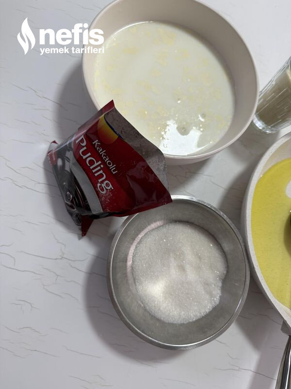

🍽️ 10-12 kişilik⏱️ Hazırlık: 5 dk🔥 Pişirme: 45 dk🏷️ Tatlı Tarifleri🏷️ Helva Tarifleri
Malzemeler
- 1 yemek kaşığı tereyağı
- 5-6 yemek kaşığı sıvı yağ
- 1 su bardağı irmik( ince irmik 0 numara)
- 1 paket tercihen bitter çikolata
- 1 çay bardağı şeker( daha tatlı isteyen fazla koyabilir)
- 1 paket kakaolu puding
- 3,5 su bardağı süt
Hazırlanışı
- Önce sosumuzu( şerbetimizi) hazırlıyoruz.
- Hafif ılık sütü, şekeri ve toz puddingi pürüzsüz olasaya kadar çırpıyoruz.
- Tavamıza veya tenceremize tereyağı ve sıvı yağı alıyoruz.
- İrmiği ilave ederek rengi dönene kadar(fıstık kabuğu rengi) orta ateşte kavuruyoruz.
- Rengi dönünce ocağı kısıp sosunu ekleyerek hızlıca karıştırmaya devam ediyoruz.
- Koyulaşıp kıvam alasaya kadar karıştırıyoruz.
- Kıvam alınca böldüğümüz çikolata parçalarını da ekleyerek çikolatalar eriyene kadar karıştırmaya devam ediyoruz.
- Ocağı kapatıp, kapağını kapatıp 5-10 dakika dinlendiriyoruz.
- İster dondurma kaşığı ile, isterseniz kurabiye kalıbı ile veya değişik şekillerde şekil verebilirsiniz. (üzerini hindistan cevizi, tarçın vs ile süsleyebilirsiniz) afiyet olsun 🙂.